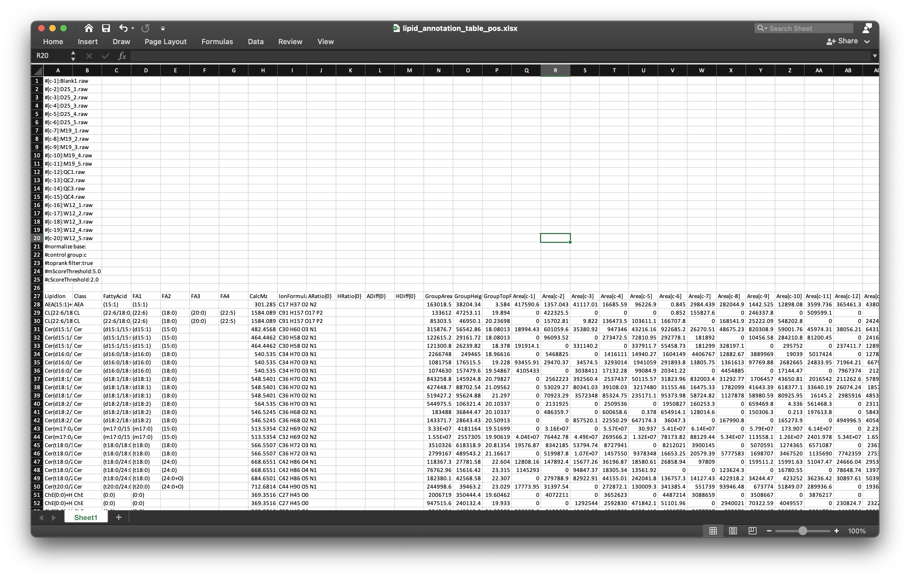
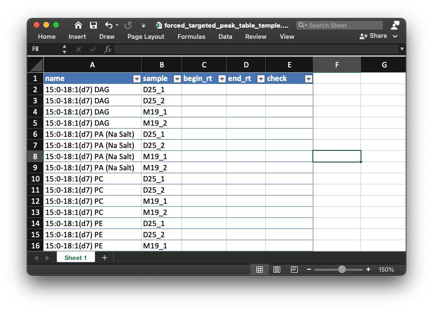

vignettes/is_relative_quantification.Rmd
is_relative_quantification.RmdThis step is used to get the relative quantification data of internal standards and lipids in all samples. If you have not finished the previous step, please click here:
Get retention time of internal standards.
If you have finished this step, click here to next step:
We should have finished step 1. Then we combine the internal standard information from positive and negative mode.
is_info_table_new_pos =
readxl::read_xlsx("example/POS/IS_info_new.xlsx")
is_info_table_new_neg =
readxl::read_xlsx("example/NEG/IS_info_new.xlsx")
is_info_table_new =
is_info_table_new_pos %>%
dplyr::left_join(is_info_table_new_neg[, c("name", "rt_neg_second", "rt_neg_min", "adduct_neg", "mz_neg")],
by = "name")
head(is_info_table_new)
#> # A tibble: 6 x 13
#> name exact.mass formula ug_ml um rt_pos_second rt_pos_min adduct_pos
#> <chr> <dbl> <chr> <dbl> <dbl> <dbl> <dbl> <chr>
#> 1 15:0… 588. C36H61… 0.22 0.375 1147. 19.1 M+H-H2O
#> 2 15:0… 690. C36H61… 0.172 0.25 783. 13.0 M+H
#> 3 15:0… 753. C41H73… 1.88 2.5 1182. 19.7 M+H
#> 4 15:0… 711. C38H67… 0.125 0.175 1193. 19.9 M+H
#> 5 15:0… 764. C39H67… 0.095 0.125 1181. 19.7 M+H
#> 6 15:0… 847. C42H75… 0.422 0.5 1147. 19.1 M+H
#> # … with 5 more variables: mz_pos <dbl>, rt_neg_second <dbl>, rt_neg_min <dbl>,
#> # adduct_neg <chr>, mz_neg <dbl>Then we output the is_info_table_new into the example/Result folder.
We first create a folder named as Result:
dir.create("example/Result")
dir.create("example/Result")
openxlsx::write.xlsx(is_info_table_new,
file = "example/Result/IS_info_table.xlsx")We need to get the sample information of samples first.
sample_info_pos =
generate_sample_info(path = "example/POS")
head(sample_info_pos)
#> sample.name group
#> 1 D25_1 D25
#> 2 D25_2 D25
#> 3 M19_1 M19
#> 4 M19_2 M19Get the Cholesterol retention time:
if (any(is_info_table_new$name == "Cholesterol")) {
idx = which(is_info_table_new$name == "Cholesterol")
chol_rt2 = c(is_info_table_new$rt_pos_second[idx],
is_info_table_new$rt_neg_second[idx])
chol_rt2 = chol_rt2[!is.na(chol_rt2)]
if (length(chol_rt2) > 0) {
chol_rt = chol_rt2[1]
}
} else{
chol_rt = 1169
}
chol_rt
#> [1] 1720.245Then run get_relative_quantification() to get the relative quantification data of internal standards:
get_relative_quantification(
path = "example/POS",
targeted_table_name = "IS_info_new.xlsx",
sample_info = sample_info_pos,
targeted_table_type = "is",
polarity = "positive",
chol_rt = chol_rt,
output_eic = TRUE,
ppm = 40,
rt.tolerance = 180,
threads = 5,
rerun = FALSE
)
#> Reading raw data, it will take a while...
#> Reading 18519 spectra from file D25_1.mzXML
#> Reading 18473 spectra from file D25_2.mzXML
#> Reading 18464 spectra from file M19_1.mzXML
#> Reading 18381 spectra from file M19_2.mzXML
#> ✓ OK
#> Extracting peaks, it will take a while...✓ OK
#>
#> Output peak shapes...
#> 1 2 3 4 5 6 7 8 9 10 11 12 13 14 15 16 17 18 19 20
#> DoneThe meanings of parameters:
path: Work directory. Here we set as example/POS.
targeted_table_name: The name of internal standard information.
sample_info: sample information of samples.
targeted_table_type: The type of extracted peaks, “is” (internal standard) or “lipid” (lipids).
polarity: “positive” or negative.
chol_rt: Cholesterol retention time (second).
output_eic: Output EICs of peaks or not.
ppm: peak detection ppm.
rt.tolerance: peak detection retention time tolerance (second).
threads: Number of cores to run.
rerun: Rerun peak detection or not.
Then all the results are outputted into a folder named as example/POS/is_relative_quantification. The relative quantification table is is_quantification_table.xlsx and all the peak shapes are in peak_shape.
is_quantification_table.xlsx is:
is_quantification_table.xlsx
One example of peak shape (15_0-18_1(d7) PC):
Rectangle region means the integrate of peak region.
Then run get_relative_quantification() for lipids:
get_relative_quantification(
path = "example/POS",
output_path_name = "lipid_relative_quantification",
targeted_table_name = "lipid_annotation_table_pos.xlsx",
sample_info = sample_info_pos,
targeted_table_type = "lipid",
polarity = "positive",
chol_rt = chol_rt,
output_eic = TRUE,
ppm = 40,
rt.tolerance = 180,
threads = 5,
rerun = FALSE
)
#> Error in nlsModel(formula, mf, start, wts) :
#> singular gradient matrix at initial parameter estimates
#> Error in nlsModel(formula, mf, start, wts) :
#> singular gradient matrix at initial parameter estimates
#> Error in nlsModel(formula, mf, start, wts) :
#> singular gradient matrix at initial parameter estimates
#> Error in nlsModel(formula, mf, start, wts) :
#> singular gradient matrix at initial parameter estimates
#> Error in nlsModel(formula, mf, start, wts) :
#> singular gradient matrix at initial parameter estimates
#> Error in nlsModel(formula, mf, start, wts) :
#> singular gradient matrix at initial parameter estimates
#> Error in nlsModel(formula, mf, start, wts) :
#> singular gradient matrix at initial parameter estimates
#> Error in nlsModel(formula, mf, start, wts) :
#> singular gradient matrix at initial parameter estimates
#>
#> Output peak shapes...
#> 1 2 3 4 5 6 7 8 9 10 11 12 13 14 15 16 17 18 19 20 21 22 23 24 25 26 27 28 29 30 31 32 33 34 35 36 37 38 39 40 41 42 43 44 45 46 47 48 49 50 51 52 53 54 55 56 57 58 59 60 61 62 63 64 65 66 67 68 69 70 71 72 73 74 75 76 77 78 79 80 81 82 83 84 85 86 87 88 89 90 91 92 93 94 95 96 97 98 99 100 101 102 103 104 105 106 107 108 109 110 111 112 113 114 115 116 117 118 119 120 121 122 123 124 125 126 127 128 129 130 131 132 133 134 135 136 137 138 139 140 141 142 143 144 145 146 147 148 149 150 151 152 153 154 155 156 157 158 159 160 161 162 163 164 165 166 167 168 169 170 171 172 173 174 175 176 177 178
#> DoneHere the targeted_table_name is the annotation table from lipidsearch. It should be placed in POS and NEG folders, respectively.

The results are outputted in example/POS/lipid_relative_quantification folder. These results are similar with internal standards.
Negative mode is same with positive mode.
sample_info_neg =
generate_sample_info(path = "example/NEG")
get_relative_quantification(
path = "example/NEG",
output_path_name = "is_relative_quantification",
targeted_table_name = "IS_info_new.xlsx",
sample_info = sample_info_neg,
targeted_table_type = "is",
polarity = "negative",
chol_rt = chol_rt,
output_integrate = TRUE,
output_eic = TRUE,
ppm = 40,
rt.tolerance = 180,
threads = 5,
rerun = FALSE
)
#>
#> Output peak shapes...
#> 1 2 3 4 5 6 7 8 9 10 11 12 13 14 15
#> DoneThen run get_relative_quantification() for lipids:
get_relative_quantification(
path = "example/NEG",
output_path_name = "lipid_relative_quantification",
targeted_table_name = "lipid_annotation_table_neg.xlsx",
sample_info = sample_info_neg,
targeted_table_type = "lipid",
polarity = "negative",
chol_rt = chol_rt,
output_eic = TRUE,
ppm = 40,
rt.tolerance = 180,
threads = 5,
rerun = FALSE
)
#>
#> Output peak shapes...
#> 1 2 3 4 5 6 7 8 9 10 11 12 13 14 15 16 17 18 19 20 21 22 23 24 25 26 27 28 29 30 31 32 33 34 35 36 37 38 39 40 41 42 43 44 45 46 47 48 49 50 51 52 53 54 55 56 57 58 59 60 61
#> DoneSometimes, the peak detection maybe not accurate, so we need to manually check the peak shape of all the internal standards and then detect peak and integrate peak shape again.
For example, the internal standard 18_1_d7_ Lyso PC in positive mode (example/POS/is_relative_quantification/peak_shape/18_1_d7_ Lyso PC.html), the peak shape is like below figure shows:
From this figure, we can see that for the samples D25_1, D25_2 and M19_2, the integrate region (begin point) is not correct, so we need to manually correct that.
example/POS/is_relative_quantification/forced_targeted_peak_table_temple.xlsx, like the below figure shows:
example/POS/is_relative_quantification/peak_shape. Then if you find that the peak integration is not correct, you can add the right begin and end retention time for peaks like below video shows:After check all the internal standards which are not normal, please rename it as forced_targeted_peak_table_temple_manual.xlsx and rerun get_relative_quantification(), and note that set forced_targeted_peak_table_name as forced_targeted_peak_table_temple_manual.xlsx:
get_relative_quantification(
path = "example/POS",
forced_targeted_peak_table_name = "forced_targeted_peak_table_temple_manual.xlsx",
output_path_name = "is_relative_quantification",
targeted_table_name = "IS_info_new.xlsx",
sample_info = sample_info_pos,
targeted_table_type = "is",
polarity = "positive",
chol_rt = chol_rt,
output_integrate = TRUE,
output_eic = TRUE,
ppm = 40,
rt.tolerance = 180,
threads = 5,
rerun = FALSE
)
#> Manually check..
#>
#> Output peak shapes...
#> 10
#> DoneThen open the internal standard 18_1_d7_ Lyso PC in positive mode (example/POS/is_relative_quantification/peak_shape/18_1_d7_ Lyso PC.html), the peak detection is good for now:
For the negative mode, we can also manually check internal standards like this and rerun to get more accurate peak integration and relative quantification data.